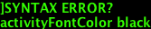

Use Cases Overview
An important early part in the process of system architecture is identifying
the functional requirements that the resulting system should be able to
address. Use cases are helpful for this as they describe how actors (typically
entities external to the system) interact with system components. Interaction
diagrams help define the interfaces and messages transmitted between
components.

Use Case Layout
Each use case document is structured following a common template which
includes the following elements.
- Author
- Who generated the use case. This will usually be “VDC TWG”.
- Date
- Date the use case was identified and known subsequent modifications.
- Version
- One of “Draft”, “Review”, “Published”
- Goal
- Brief description of what is intended with the use case.
- Summary
- An overview of the use case which includes the goal and major actors.
- Use case diagram
- A diagram representation of the use case, somewhat following the UML.
- Sequence diagram
- A sequence diagram that shows the operations involved in addressing the use
case.
- Actors
- The participants in the use case - includes people and systems.
- Preconditions
- The conditions that must exist for the use case. For example, a particular
use case may only be valid if the use has been authenticated.
- Triggers
- Describes the even that causes the use case to be initiated.
- Postconditions
- The state of the system after the use case - what conditions are true after
the use case is completed.
Notes Miscellaneous notes and discussion items that can’t be placed in the
various categories. Comments should be annotated with time and author.